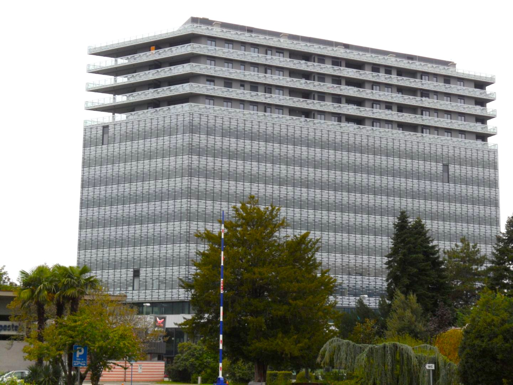
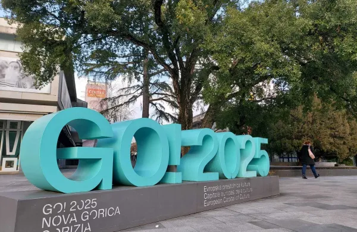
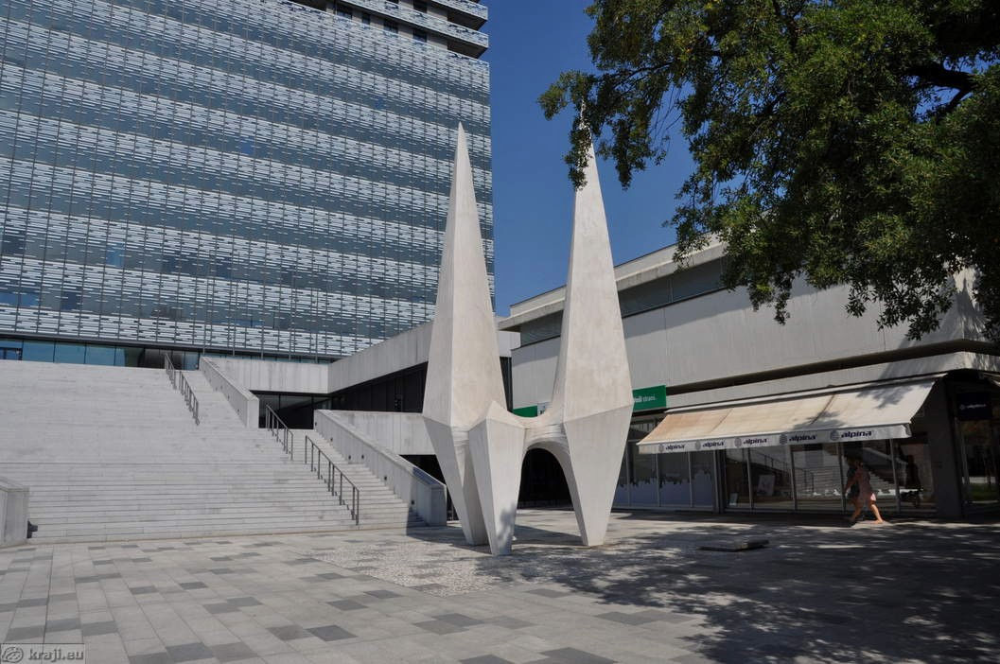

Arhitektura
Ta postaja je bila zgrajena leta 1906 in prikazuje arhitekture tedanjega časa.

Nova Gorica se nahaja na primorskem. Meji se z staro Gorico, ki je v Italiji. V letu 2025 je postala prestolnica Evropske kulture. Ima malce pod 32.000 prebivalcev. V novi Gorici je tudi ogromno pekarn npr. Asim pek, kjer pečejo veliko dobrot.
Fotografije predstavljajo značilnosti, znamenitosti, naravo in življenje mojega kraja.
Ta postaja je bila zgrajena leta 1906 in prikazuje arhitekture tedanjega časa.

Nova gorica je postala prestolnica evropske kulture leta 2025.

V Novi Gorici je veliko zelenja in narave, po katerem je zelo znana.

Bevkov trg je center Nove Gorice. Imenovan je po pisatelju Francetu Bevku.

Pod eda centrom leži zanimiv kip, ki je vendar posvečen bratoma Rusijan.

Otroci v Novi Gorici hodijo v šole in namreč osnovne in srednje šole. Ena izmed teh je ERŠ.
To je najvišja stavba v Novi Gorici, ki je poimenovana po prvem letalu Brata Rusijan.
.jpeg)
Imamo občino.
Izberi eno svojo fotografijo, ki ti je najbolj všeč, in razloži, zakaj.
Opišeš lahko motiv, svetlobo, kompozicijo, perspektivo ali zgodbo, ki jo fotografija predstavlja.

Poišči primeren YouTube videoposnetek, ki predstavlja tvoj kraj ali njegovo okolico.
Zamenjaj vsebino tega okvirja z iframe kodo iz YouTube.
Vir videa: YouTube – vpiši ime kanala in povezavo
Vse fotografije na spletni strani so lastno delo avtorja, razen če je navedeno drugače.